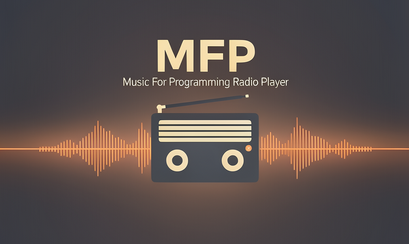

Lightweight terminal player for musicforprogramming.net. Streams directly, no external dependencies, MPRIS support.

Starts playing after a 512 KB buffer — no waiting for the full episode to download.
Play/pause, volume, mute, next, previous, shuffle — all from the keyboard while it runs.
Exposes D-Bus MPRIS so Polybar, KDE, GNOME, and any media client can see and control it.
Download episodes to ~/.config/mfp/downloads/ and listen without a connection.
Mark episodes as favorites and play only those, with or without shuffle.
Pure Rust audio pipeline — no mpv, no ffmpeg. MP3, FLAC, AAC, ALAC, Vorbis, WAV.
Requires Rust stable. The release profile strips debug info and optimizes for size (~3.6 MB).
git clone https://github.com/4DRIAN0RTIZ/mfp && cd mfp
cargo build --release
Copy the binary system-wide so you can run mfp from anywhere.
sudo cp target/release/mfp /usr/local/bin/
mfp play
mfp play # first episode mfp play -e 75 # specific episode mfp play -s # shuffle mfp play -f # favorites only mfp play -f -s # favorites + shuffle
mfp fav -l # list mfp fav -a "Episode 75" # add mfp fav -r "Episode 75" # remove
mfp download -e 75 # download ep mfp download --list # list cached mfp download --size # disk usage mfp download --delete … # remove ep
mfp list # all episodes